Acordeón con <details>. Capturas HQ EM + renders DF en shots/. X/nitter limitado → ia_x=0.
En una frase: Hacienda/Quiroz recorta 2026 bajo 1% y mira 2027; OGUC visada por Contraloría con eco CChC/municipios (EM+DF); MOP 241 obras y oficinas A en mínima vacancia; IA: Pimento→Mistral, ITD-IA 34/100, HumanIAdes, Toku y IA en Salud; sin mención editorial a Ingevec en EM (88 págs / 160 arts) ni en DF scrapeado.
El chileno Tomás Yany cofundó Pimento en París en 2022. Cuatro años después, la startup de publicidad con IA fue comprada por Mistral AI.
“Ce n’est plus un secret”. Así, mezclando francés e inglés, el chileno Tomás Yany confirmó en LinkedIn el pasado 22 de septiembre que el equipo de Pimento , la startup que cofundó en París, se suma a Mistral AI .
El precio no es público, según registros societarios revisados por el medio de comunicación Sifted, la operación se valorizó en unos US$ 14,6 millones , pagados en caja y acciones de Mistral. L’Informé, el medio francés que adelantó la compra, habló de unos US$ 4,4 millones. Mistral sólo confirmó “varios millones de euros”.
Pimento nació en octubre de 2022 y hace publicidad con AI generativa . A partir de un brief, la identidad de la marca y los datos de campañas en Meta, TikTok, Google y Pinterest, arma avisos y animaciones cortas para redes sociales. Según The Next Web, la usan más de 180 marcas. En diciembre de 2023 levantó cerca de US$ 3,4 millones en una ronda seed liderada por Partech y Cygni Capital , con ángeles como Julien Chaumond, cofundador de Hugging Face, y Stanislas Polu, cofundador de Dust.
Ingevec: Señal de M&A en GenAI creativo/publicidad; mapear proveedores locales vs labs globales.
Captura DF · DF
Chile alcanzó 34 de 100 puntos en su primer índice de madurez empresarial en inteligencia artificial y permanece, en promedio, en una etapa de pilotaje. El diagnóstico muestra que las mayores brechas para avanzar no están únicamente en la tecnología: estrategia, gobernanza y capacidad de ejecución aparecen como factores decisivos para convertir la experimentación en resultados concretos.
Experimentar con inteligencia artificial se ha vuelto habitual en las empresas. Pruebas de concepto, licencias, capacitaciones y nuevos casos de uso se multiplican, pero esa actividad no necesariamente significa que la tecnología esté modificando la forma en que una organización toma decisiones, atiende a sus clientes o desarrolla sus procesos.
Esa distancia entre experimentar y transformar aparece reflejada en el Índice de Transformación Digital en Inteligencia Artificial (ITD-IA) 2026, elaborado por Corfo, la Cámara de Comercio de Santiago (CCS) y PMG Chile. A partir de una muestra de 740 empresas, el estudio situó la madurez promedio del país en 34 puntos sobre 100, correspondiente al nivel “Pilotear”, el segundo de una escala que avanza desde Explorar hasta Liderar. [](https://www.ccs.cl/2026/09/04/chile-mide-primera-vez-madurez-ia-parte-34-100-puntos-oportunidad-escalamiento/)
Para Sergio Bijman, director del Observatorio de Sociedad Digital y director académico del Diplomado en Gestión para la Transformación Digital en la Era de la Inteligencia Artificial, el problema no radica necesariamente en la falta de iniciativas.
“Los pilotos de IA se han convertido en una forma elegante de postergar decisiones. Permiten decir que la empresa ‘está trabajando en IA’ sin preguntarse qué procesos sobran, qué decisiones son demasiado lentas o qué gerentes están frenando el cambio”, sostiene.
Ingevec: Priorizar hoja de ruta con ROI medible y gobernanza antes de multiplicar pilots.
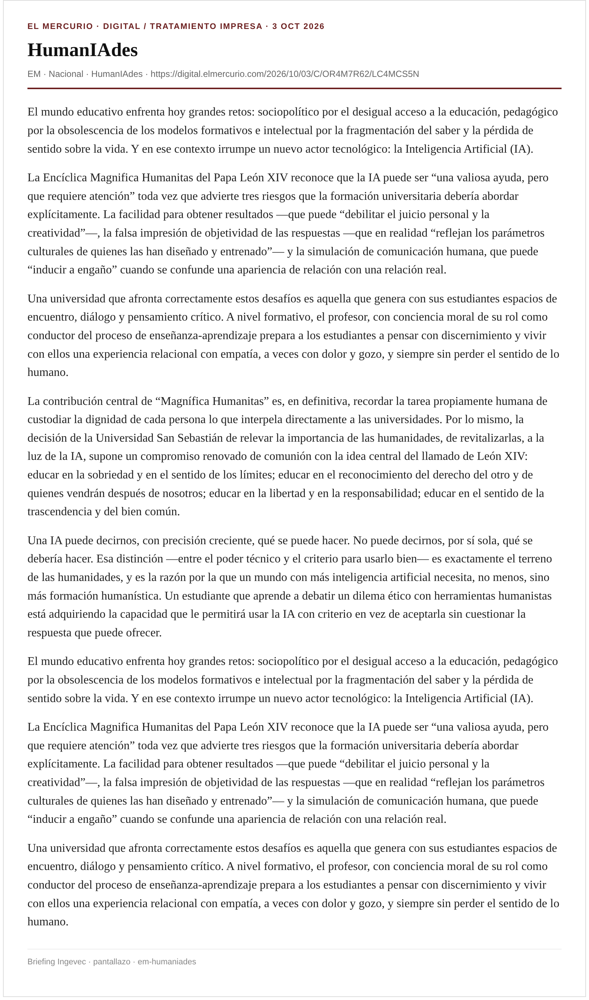
El mundo educativo enfrenta hoy grandes retos: sociopolítico por el desigual acceso a la educación, pedagógico por la obsolescencia de los modelos formativos e intelectual por la fragmentación del saber y la pérdida de sentido sobre la vida. Y en ese contexto irrumpe un nuevo actor tecnológico: la Inteligencia Artificial (IA).
La Encíclica Magnifica Humanitas del Papa León XIV reconoce que la IA puede ser “una valiosa ayuda, pero que requiere atención” toda vez que advierte tres riesgos que la formación universitaria debería abordar explícitamente. La facilidad para obtener resultados —que puede “debilitar el juicio personal y la creatividad”—, la falsa impresión de objetividad de las respuestas —que en realidad “reflejan los parámetros culturales de quienes las han diseñado y entrenado”— y la simulación de comunicación humana, que puede “inducir a engaño” cuando se confunde una apariencia de relación con una relación real.
Una universidad que afronta correctamente estos desafíos es aquella que genera con sus estudiantes espacios de encuentro, diálogo y pensamiento crítico. A nivel formativo, el profesor, con conciencia moral de su rol como conductor del proceso de enseñanza-aprendizaje prepara a los estudiantes a pensar con discernimiento y vivir con ellos una experiencia relacional con empatía, a veces con dolor y gozo, y siempre sin perder el sentido de lo humano.
La contribución central de “Magnífica Humanitas” es, en definitiva, recordar la tarea propiamente humana de custodiar la dignidad de cada persona lo que interpela directamente a las universidades. Por lo mismo, la decisión de la Universidad San Sebastián de relevar la importancia de las humanidades, de revitalizarlas, a la luz de la IA, supone un compromiso renovado de comunión con la idea central del llamado de León XIV: educar en la sobriedad y en el sentido de los límites; educar en el reconocimiento del derecho del otro y de quienes vendrán después de nosotros; educar en la libertad y en la responsabilidad; educar en el sentido de la trascendencia y del bien común.
Una IA puede decirnos, con precisión creciente, qué se puede hacer. No puede decirnos, por sí sola, qué se debería hacer. Esa distinción —entre el poder técnico y el criterio para usarlo bien— es exactamente el terreno de las humanidades, y es la razón por la que un mundo con más inteligencia artificial necesita, no menos, sino más formación humanística. Un estudiante que aprende a debatir un dilema ético con herramientas humanistas está adquiriendo la capacidad que le permitirá usar la IA con criterio en vez de aceptarla sin cuestionar la respuesta que puede ofrecer.
Ingevec: Útil para política interna de uso de GenAI en formación y procesos.
Captura EM · EM
Kast anuncia uso de inteligencia artificial en Salud para priorizar atención de pacientes de mayor gravedad
En la presentación del Presupuesto 2027, el Presidente informó que los recursos para el sector crecerán un 4,7%. También adelantó una ficha clínica compartida entre las redes pública y privada, una canasta esencial de medicamentos y mayor financiamiento para reducir las listas de espera.
El Presidente José Antonio Kast anunció este miércoles el uso de inteligencia artificial (IA) para priorizar la atención de los pacientes de mayor gravedad, como parte de las medidas contempladas en materia de Salud en el proyecto de Ley de Presupuestos 2027.
Durante la cadena nacional en la que presentó su primer erario fiscal, que contempla un aumento general del gasto público de 1,5%, el Mandatario señaló que se implementará “una ficha clínica compartida entre la red pública y la privada; y el uso de inteligencia artificial para que el paciente más grave sea atendido primero”.
Ingevec: Señal de demanda pública de IA en salud; posible spillover a infraestructura de datos.
¿Cómo incorporar la inteligencia artificial sin sustituir las capacidades que buscamos formar? Esa pregunta está en el centro de la nueva Política y Protocolo de la Escuela de Gobierno y Gestión Pública de la Universidad de Chile. La iniciativa, desarrollada en el marco de un proyecto FADOP y construida con la participación de docentes y estudiantes, propone criterios para integrar estas tecnologías a la formación de pregrado resguardando el pensamiento crítico, la responsabilidad humana y las competencias que cada actividad busca desarrollar.
La Escuela de Gobierno y Gestión Pública de la Facultad de Gobierno de la Universidad de Chile lanzó este miércoles 30 de septiembre su Política de Integración Crítica y Ética de la Inteligencia Artificial Generativa para la Formación en Asuntos Públicos, junto con el Protocolo que orienta su implementación. La actividad reunió a autoridades universitarias y de la facultad, académicas y académicos, estudiantes y representantes estudiantiles.
El encuentro, realizado en el Auditorio de la Facultad de Gobierno, contó con la participación del Vicerrector de Tecnologías de la Información de la Universidad de Chile, José Correa Haeussler; de la Directora del Departamento de Pregrado,Andrea Greibe Kohn; del Decano (s) de la Facultad de Gobierno, Ariel Ramírez; y del Director del Departamento de Estudios Políticos, Felipe Agüero, además de docentes, representantes de los centros de estudiantes de Administración Pública yCiencia Políticay estudiantes de la Escuela.
La Política busca orientar el uso crítico, ético y responsable de la inteligencia artificial generativa en los procesos de enseñanza, aprendizaje y evaluación en el pregrado de la Facultad de Gobierno, involucrando a estudiantes, docentes, ayudantes y otros actores de los procesos formativos. Entre sus principios rectores se encuentran la igualdad de oportunidades, la gradualidad, la reflexión crítica, la responsabilidad y supervisión humana, la protección de datos personales y confidencialidad, la igualdad de género y no discriminación, la transparencia, probidad y rendición de cuentas, y la integración curricular y mejora continua.
Ingevec: Plantilla de gobernanza: supervisión humana, datos, transparencia.
La fintech chilena Toku suma agentes de inteligencia artificial a su plataforma de cobros recurrentes en Chile, México y Brasil: no son chatbots, sino agentes conectados a ERP/CRM que ejecutan cobranza y promesas de pago, cobrando por resultado.
Hoy gestiona unas 150.000 conversaciones diarias y proyecta llegar a un millón en el próximo año. Fundada en Santiago en 2020, opera con más de 600 empresas; su CEO Cristina Etcheberry figuró en TIME100 Next 2026.
La apuesta es integrar el agente al ciclo de ingresos (contactar, registrar promesa, cobrar, conciliar) en un mercado latinoamericano donde menos del 10% de las 5.000 millones de interacciones mensuales empresa-cliente las maneja un agente.
Ingevec: Caso local de agentes con herramientas en ciclo de ingresos; útil para cobranzas/postventa inmobiliaria.
Si antes la preocupación de las editoriales de libros estaba en la venta ambulante de libros falsificados en la calle, en sectores como Paseo Ahumada o en las veredas de San Diego, ahora la inquietud también se amplió a internet.
Así lo señalan algunos actores de la industria de libros, apuntando a que esta piratería —que crece en Chile y en distintos mercados de la región— está causando un fuerte impacto al negocio y a su mercado laboral.
Hasta el año pasado, señalan cercanos a la industria, el foco de las preocupaciones estaba en que los libros piratas podían encontrarse en Mercado Libre, la principal plataforma de comercio electrónico del país (que concentra entre el 30% y 40% del segmento e-commerce en Chile). Tras retomar las relaciones con la plataforma de origen trasandino (ver recuadro), el problema migró desde este marketplace hacia las redes sociales, según comentan actores del rubro. Actualmente afectaría a una amplia gama de productos, tanto best sellers como textos educativos para escolares.
“Hemos percibido que existe un gran número de libros falsificados en redes sociales, especialmente en los marketplaces de Facebook e Instagram”, afirma Soledad Escudero, directora ejecutiva de la Corporación del libro y la Lectura (CLL).
Captura EM · EM
Ayer se publicó en el Diario Oficial el decreto que modificó la Ordenanza General de Urbanismo y Construcciones (OGUC), un paso que esperaban los desarrolladores inmobiliarios para darles curso a proyectos que tenían en carpeta. Las modificaciones abordan materias como exigencias de estacionamientos o coeficiente de habitantes para construir propiedades habitacionales, que permitirían aumentar la densificación. José Miguel Simian, director del Centro de Estudios Inmobiliarios del ESE Business School de la U. de los Andes, sostiene que “el principal impacto se dará en la reconversión de activos en lugares que estaban topados por la densidad y en los que se podrán construir más unidades por metro cuadrado de suelo, específicamente unidades más pequeñas que responden mejor al mercado actual de hogares con menos personas. Van a ser más pequeñas, pero no necesariamente más baratas, no al menos por metro cuadrado construido, pero sí podrían ser tickets más bajos y más asequibles”.
Ignacio Aravena, investigador de Fundación Piensa, coincide que “en algunos sectores es probable que se construyan viviendas más pequeñas y un ticket de compra menor”.
El texto aprobado permite, entre otras materias, una reducción de estacionamientos, una mayor constructibilidad efectiva y un aumento en el número de departamentos dentro del mismo volumen edificado.
“Con los alcances expuestos, se ha tomado razón del decreto N° 68, de 2026, del Ministerio de Vivienda y Urbanismo”. De esta manera, la contralora general, Dorothy Pérez, le dio luz verde al decreto para modificar la Ordenanza General de Urbanismo y Construcción (OGUC), por medio del cual el gobierno busca reducir los precios de los inmuebles y reactivar al sector.
A fines de julio, el Minvu ingresó a la Contraloría el decreto para hacer las modificaciones a la OGUC. La propuesta fue menos ambiciosa de lo que se planteó inicialmente. Pese a esto, a principios de septiembre, la entidad liderada por Iván Poduje retiró el documento que estaba siendo sometido a revisión por la entidad fiscalizadora.
Con esto, se abrieron las especulaciones entre inmobiliarios y alcaldes. Bajo reserva, se hablaba de que el mentado decreto podría enfrentar un largo período de análisis y reformulación.
Desde el rubro destacaron que los cambios “entregan certezas para poder avanzar en el desarrollo de proyectos” y anticiparon que las nuevas condiciones podrían reducir los costos y el precio final de algunas viviendas.
Ingevec: Mapear permisos vs anteproyectos; ventana post-Diario Oficial; diálogo DOM/municipios.
Captura DF · Captura DF industria · DF · DF industria · EM tickets · La Tercera · The Clinic
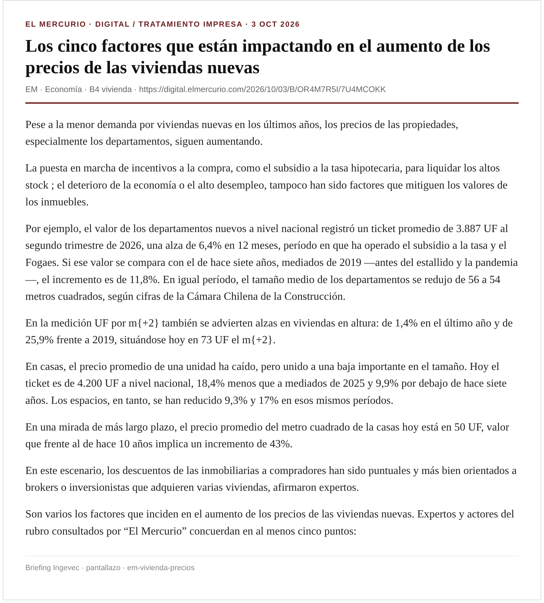
Pese a la menor demanda por viviendas nuevas en los últimos años, los precios de las propiedades, especialmente los departamentos, siguen aumentando.
La puesta en marcha de incentivos a la compra, como el subsidio a la tasa hipotecaria, para liquidar los altos stock ; el deterioro de la economía o el alto desempleo, tampoco han sido factores que mitiguen los valores de los inmuebles.
Por ejemplo, el valor de los departamentos nuevos a nivel nacional registró un ticket promedio de 3.887 UF al segundo trimestre de 2026, una alza de 6,4% en 12 meses, período en que ha operado el subsidio a la tasa y el Fogaes. Si ese valor se compara con el de hace siete años, mediados de 2019 —antes del estallido y la pandemia—, el incremento es de 11,8%. En igual período, el tamaño medio de los departamentos se redujo de 56 a 54 metros cuadrados, según cifras de la Cámara Chilena de la Construcción.
En la medición UF por m{+2} también se advierten alzas en viviendas en altura: de 1,4% en el último año y de 25,9% frente a 2019, situándose hoy en 73 UF el m{+2}.
En casas, el precio promedio de una unidad ha caído, pero unido a una baja importante en el tamaño. Hoy el ticket es de 4.200 UF a nivel nacional, 18,4% menos que a mediados de 2025 y 9,9% por debajo de hace siete años. Los espacios, en tanto, se han reducido 9,3% y 17% en esos mismos períodos.
Ingevec: Cruzar con OGUC visada: ¿alivia tickets / constructibilidad en 2027?
Captura EM · EM
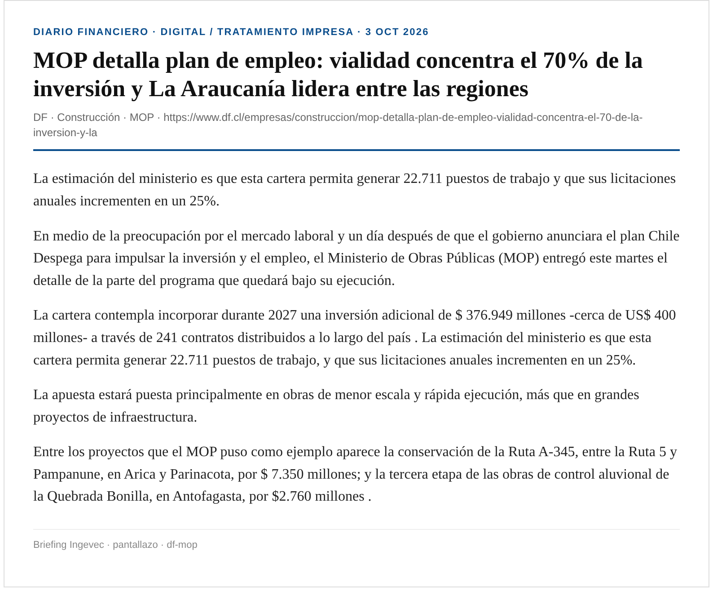
La estimación del ministerio es que esta cartera permita generar 22.711 puestos de trabajo y que sus licitaciones anuales incrementen en un 25%.
En medio de la preocupación por el mercado laboral y un día después de que el gobierno anunciara el plan Chile Despega para impulsar la inversión y el empleo, el Ministerio de Obras Públicas (MOP) entregó este martes el detalle de la parte del programa que quedará bajo su ejecución.
La cartera contempla incorporar durante 2027 una inversión adicional de $ 376.949 millones -cerca de US$ 400 millones- a través de 241 contratos distribuidos a lo largo del país . La estimación del ministerio es que esta cartera permita generar 22.711 puestos de trabajo, y que sus licitaciones anuales incrementen en un 25%.
La apuesta estará puesta principalmente en obras de menor escala y rápida ejecución, más que en grandes proyectos de infraestructura.
Entre los proyectos que el MOP puso como ejemplo aparece la conservación de la Ruta A-345, entre la Ruta 5 y Pampanune, en Arica y Parinacota, por $ 7.350 millones; y la tercera etapa de las obras de control aluvional de la Quebrada Bonilla, en Antofagasta, por $2.760 millones .
Ingevec: Pipeline público conservación/vialidad 2027: capacidad regional y ofertas.
Captura DF · DF
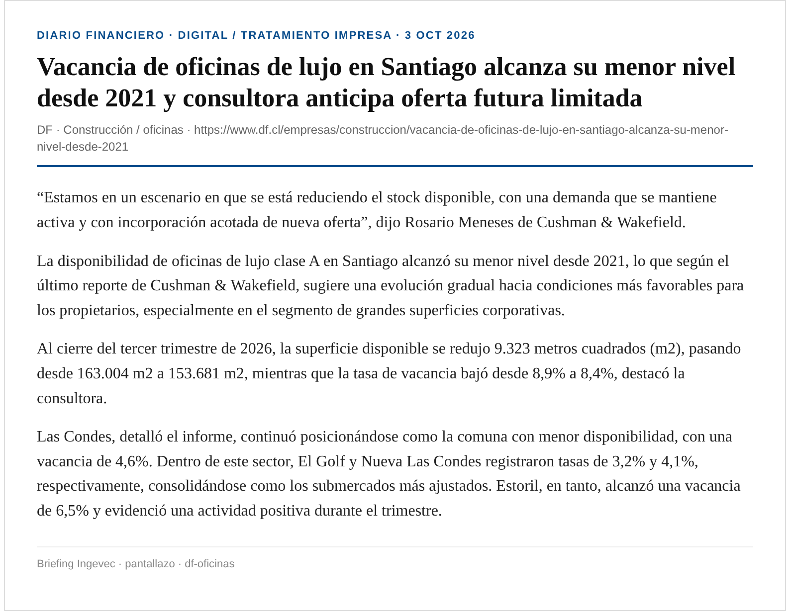
“Estamos en un escenario en que se está reduciendo el stock disponible, con una demanda que se mantiene activa y con incorporación acotada de nueva oferta”, dijo Rosario Meneses de Cushman & Wakefield.
La disponibilidad de oficinas de lujo clase A en Santiago alcanzó su menor nivel desde 2021, lo que según el último reporte de Cushman & Wakefield, sugiere una evolución gradual hacia condiciones más favorables para los propietarios, especialmente en el segmento de grandes superficies corporativas.
Al cierre del tercer trimestre de 2026, la superficie disponible se redujo 9.323 metros cuadrados (m2), pasando desde 163.004 m2 a 153.681 m2, mientras que la tasa de vacancia bajó desde 8,9% a 8,4%, destacó la consultora.
Las Condes, detalló el informe, continuó posicionándose como la comuna con menor disponibilidad, con una vacancia de 4,6%. Dentro de este sector, El Golf y Nueva Las Condes registraron tasas de 3,2% y 4,1%, respectivamente, consolidándose como los submercados más ajustados. Estoril, en tanto, alcanzó una vacancia de 6,5% y evidenció una actividad positiva durante el trimestre.
Captura DF · DF
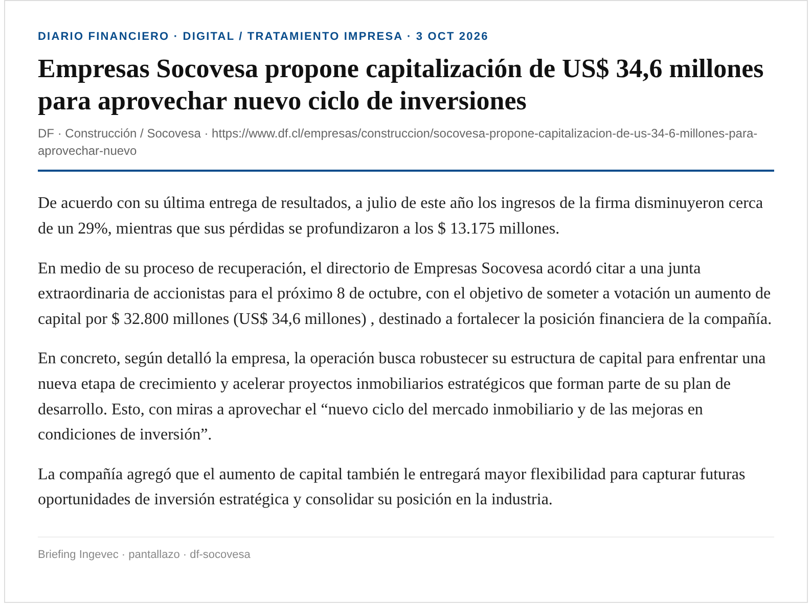
De acuerdo con su última entrega de resultados, a julio de este año los ingresos de la firma disminuyeron cerca de un 29%, mientras que sus pérdidas se profundizaron a los $ 13.175 millones.
En medio de su proceso de recuperación, el directorio de Empresas Socovesa acordó citar a una junta extraordinaria de accionistas para el próximo 8 de octubre, con el objetivo de someter a votación un aumento de capital por $ 32.800 millones (US$ 34,6 millones) , destinado a fortalecer la posición financiera de la compañía.
En concreto, según detalló la empresa, la operación busca robustecer su estructura de capital para enfrentar una nueva etapa de crecimiento y acelerar proyectos inmobiliarios estratégicos que forman parte de su plan de desarrollo. Esto, con miras a aprovechar el “nuevo ciclo del mercado inmobiliario y de las mejoras en condiciones de inversión”.
La compañía agregó que el aumento de capital también le entregará mayor flexibilidad para capturar futuras oportunidades de inversión estratégica y consolidar su posición en la industria.
Ingevec: Señal de balance sectorial: peers levantan capital ante ciclo OGUC/permisos.
Captura DF · DF
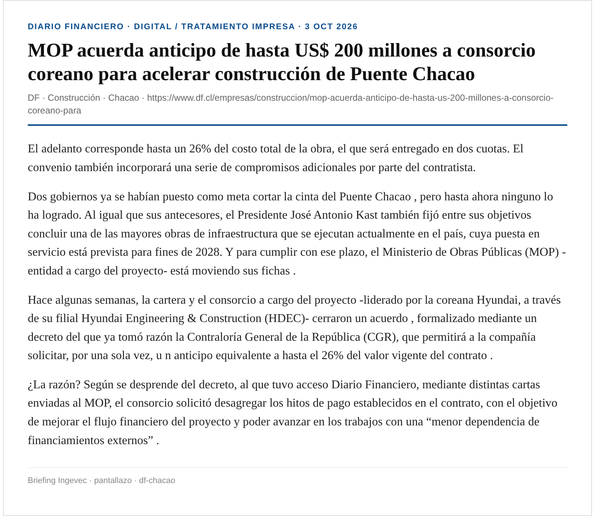
El adelanto corresponde hasta un 26% del costo total de la obra, el que será entregado en dos cuotas. El convenio también incorporará una serie de compromisos adicionales por parte del contratista.
Dos gobiernos ya se habían puesto como meta cortar la cinta del Puente Chacao , pero hasta ahora ninguno lo ha logrado. Al igual que sus antecesores, el Presidente José Antonio Kast también fijó entre sus objetivos concluir una de las mayores obras de infraestructura que se ejecutan actualmente en el país, cuya puesta en servicio está prevista para fines de 2028. Y para cumplir con ese plazo, el Ministerio de Obras Públicas (MOP) -entidad a cargo del proyecto- está moviendo sus fichas .
Hace algunas semanas, la cartera y el consorcio a cargo del proyecto -liderado por la coreana Hyundai, a través de su filial Hyundai Engineering & Construction (HDEC)- cerraron un acuerdo , formalizado mediante un decreto del que ya tomó razón la Contraloría General de la República (CGR), que permitirá a la compañía solicitar, por una sola vez, u n anticipo equivalente a hasta el 26% del valor vigente del contrato .
¿La razón? Según se desprende del decreto, al que tuvo acceso Diario Financiero, mediante distintas cartas enviadas al MOP, el consorcio solicitó desagregar los hitos de pago establecidos en el contrato, con el objetivo de mejorar el flujo financiero del proyecto y poder avanzar en los trabajos con una “menor dependencia de financiamientos externos” .
Captura DF · DF
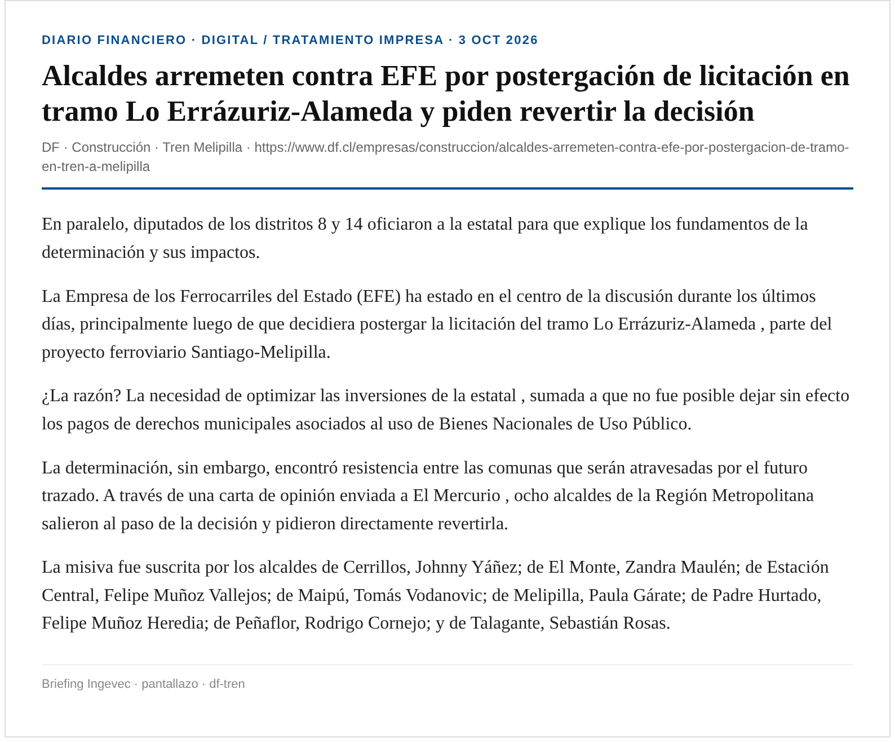
En paralelo, diputados de los distritos 8 y 14 oficiaron a la estatal para que explique los fundamentos de la determinación y sus impactos.
La Empresa de los Ferrocarriles del Estado (EFE) ha estado en el centro de la discusión durante los últimos días, principalmente luego de que decidiera postergar la licitación del tramo Lo Errázuriz-Alameda , parte del proyecto ferroviario Santiago-Melipilla.
¿La razón? La necesidad de optimizar las inversiones de la estatal , sumada a que no fue posible dejar sin efecto los pagos de derechos municipales asociados al uso de Bienes Nacionales de Uso Público.
La determinación, sin embargo, encontró resistencia entre las comunas que serán atravesadas por el futuro trazado. A través de una carta de opinión enviada a El Mercurio , ocho alcaldes de la Región Metropolitana salieron al paso de la decisión y pidieron directamente revertirla.
Captura DF · DF
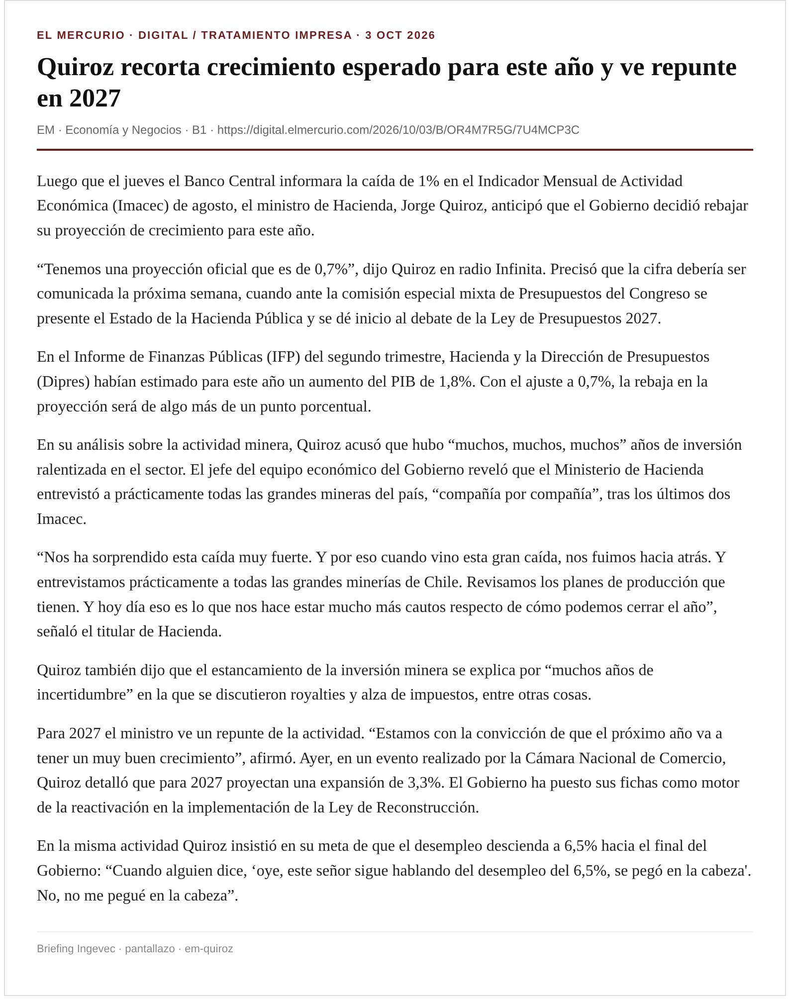
Luego que el jueves el Banco Central informara la caída de 1% en el Indicador Mensual de Actividad Económica (Imacec) de agosto, el ministro de Hacienda, Jorge Quiroz, anticipó que el Gobierno decidió rebajar su proyección de crecimiento para este año.
“Tenemos una proyección oficial que es de 0,7%”, dijo Quiroz en radio Infinita. Precisó que la cifra debería ser comunicada la próxima semana, cuando ante la comisión especial mixta de Presupuestos del Congreso se presente el Estado de la Hacienda Pública y se dé inicio al debate de la Ley de Presupuestos 2027.
En el Informe de Finanzas Públicas (IFP) del segundo trimestre, Hacienda y la Dirección de Presupuestos (Dipres) habían estimado para este año un aumento del PIB de 1,8%. Con el ajuste a 0,7%, la rebaja en la proyección será de algo más de un punto porcentual.
En su análisis sobre la actividad minera, Quiroz acusó que hubo “muchos, muchos, muchos” años de inversión ralentizada en el sector. El jefe del equipo económico del Gobierno reveló que el Ministerio de Hacienda entrevistó a prácticamente todas las grandes mineras del país, “compañía por compañía”, tras los últimos dos Imacec.
Tras participar en el Encuentro Nacional del Comercio, el ministro de Hacienda fue visita por el Presidente José Antonio Kast,
Durante el XIII Encuentro Anual de la Cámara Nacional de Comercio, Servicios y Turismo de Chile (CNC), el ministro de Hacienda, Jorge Quiroz , compartió con los sectores productivos la estrategia del gobierno. En esta línea, expresó que se enfocarían en volver a hacer al país atractivo para la inversión y prometió niveles de crecimiento por sobre el 3% a partir del próximo año .
Ingevec: Ancla macro para presupuesto/comercial 2027; sensibilidad a inversión y empleo.
Captura EM · Captura DF · EM · DF
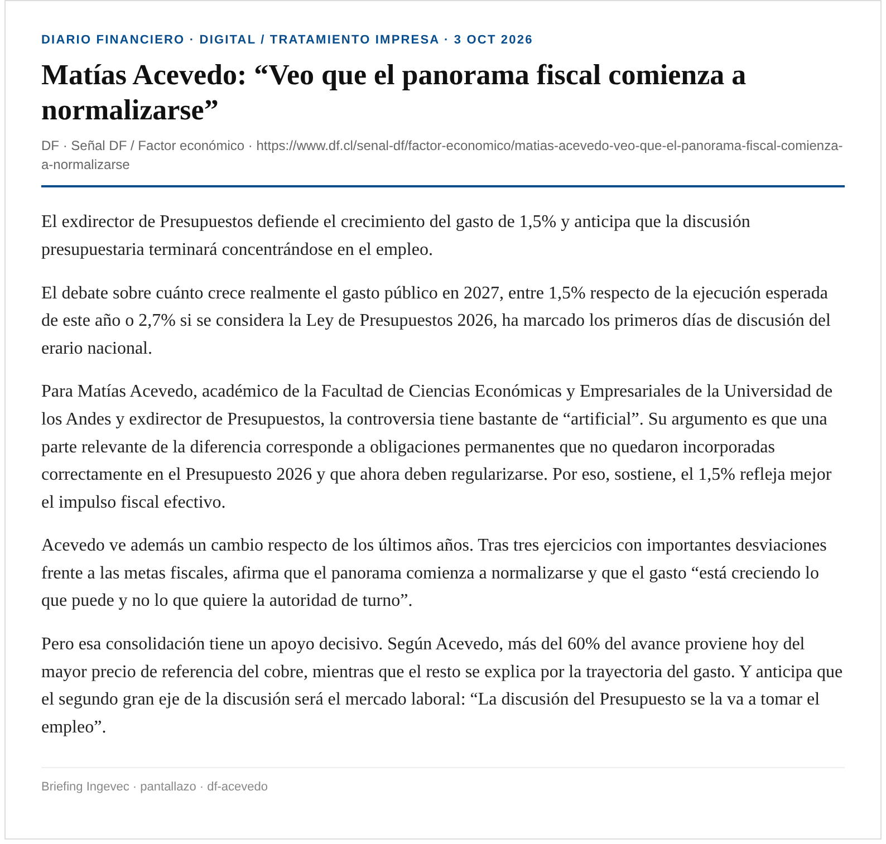
El exdirector de Presupuestos defiende el crecimiento del gasto de 1,5% y anticipa que la discusión presupuestaria terminará concentrándose en el empleo.
El debate sobre cuánto crece realmente el gasto público en 2027, entre 1,5% respecto de la ejecución esperada de este año o 2,7% si se considera la Ley de Presupuestos 2026, ha marcado los primeros días de discusión del erario nacional.
Para Matías Acevedo, académico de la Facultad de Ciencias Económicas y Empresariales de la Universidad de los Andes y exdirector de Presupuestos, la controversia tiene bastante de “artificial”. Su argumento es que una parte relevante de la diferencia corresponde a obligaciones permanentes que no quedaron incorporadas correctamente en el Presupuesto 2026 y que ahora deben regularizarse. Por eso, sostiene, el 1,5% refleja mejor el impulso fiscal efectivo.
Acevedo ve además un cambio respecto de los últimos años. Tras tres ejercicios con importantes desviaciones frente a las metas fiscales, afirma que el panorama comienza a normalizarse y que el gasto “está creciendo lo que puede y no lo que quiere la autoridad de turno”.
Pero esa consolidación tiene un apoyo decisivo. Según Acevedo, más del 60% del avance proviene hoy del mayor precio de referencia del cobre, mientras que el resto se explica por la trayectoria del gasto. Y anticipa que el segundo gran eje de la discusión será el mercado laboral: “La discusión del Presupuesto se la va a tomar el empleo”.
Captura DF · DF
Alejandro Weber hoy es decano de la facultad de Economía de la U. San Sebastián y fue subsecretario de Hacienda en el segundo gobierno de Sebastián Piñera. Con esa expertise analiza el diseño de la Ley de Presupuestos 2027 que se presentó esta semana.
“Este presupuesto persigue dos objetivos muy importantes, que parecen contrapuestos, pero no lo son: impulsar el empleo y la reactivación de la economía, con responsabilidad fiscal. El buen desempeño del Gobierno en el ajuste del gasto que había comprometido y que le permitirá cumplir sus metas de balance estructural para este año y el mejoramiento de los parámetros estructurales, le entregan cierta holgura al Ejecutivo para que en 2027 el gasto crezca algo más de lo que se había proyectado originalmente —bajo el 1%—, para enfrentar de mejor forma la crisis económica”.
“Los énfasis son adecuados, no solo porque la evidencia nos muestra que son los principales desafíos hoy, sino porque están en sintonía con las principales demandas ciudadanas”.
—¿El aumento en el gasto de 1,5%, respecto de lo que se ejecutará este año, puede ser reactivador?
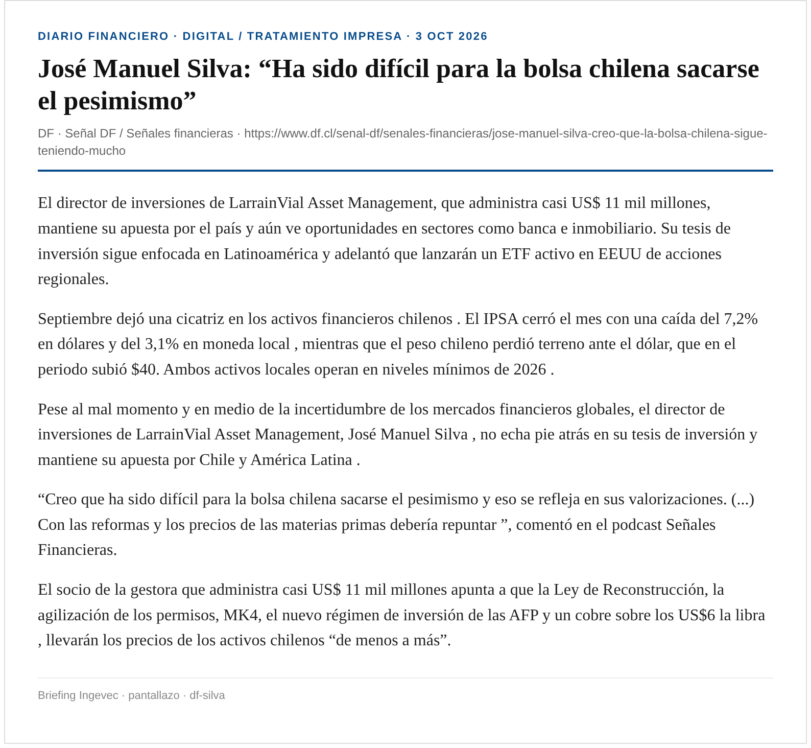
El director de inversiones de LarrainVial Asset Management, que administra casi US$ 11 mil millones, mantiene su apuesta por el país y aún ve oportunidades en sectores como banca e inmobiliario. Su tesis de inversión sigue enfocada en Latinoamérica y adelantó que lanzarán un ETF activo en EEUU de acciones regionales.
Septiembre dejó una cicatriz en los activos financieros chilenos . El IPSA cerró el mes con una caída del 7,2% en dólares y del 3,1% en moneda local , mientras que el peso chileno perdió terreno ante el dólar, que en el periodo subió $40. Ambos activos locales operan en niveles mínimos de 2026 .
Pese al mal momento y en medio de la incertidumbre de los mercados financieros globales, el director de inversiones de LarrainVial Asset Management, José Manuel Silva , no echa pie atrás en su tesis de inversión y mantiene su apuesta por Chile y América Latina .
“Creo que ha sido difícil para la bolsa chilena sacarse el pesimismo y eso se refleja en sus valorizaciones. (...) Con las reformas y los precios de las materias primas debería repuntar ”, comentó en el podcast Señales Financieras.
Captura DF · DF
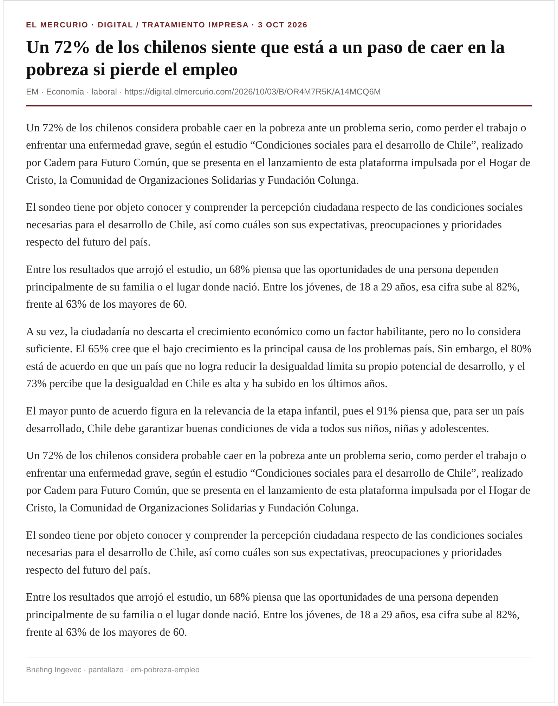
Un 72% de los chilenos considera probable caer en la pobreza ante un problema serio, como perder el trabajo o enfrentar una enfermedad grave, según el estudio “Condiciones sociales para el desarrollo de Chile”, realizado por Cadem para Futuro Común, que se presenta en el lanzamiento de esta plataforma impulsada por el Hogar de Cristo, la Comunidad de Organizaciones Solidarias y Fundación Colunga.
El sondeo tiene por objeto conocer y comprender la percepción ciudadana respecto de las condiciones sociales necesarias para el desarrollo de Chile, así como cuáles son sus expectativas, preocupaciones y prioridades respecto del futuro del país.
Entre los resultados que arrojó el estudio, un 68% piensa que las oportunidades de una persona dependen principalmente de su familia o el lugar donde nació. Entre los jóvenes, de 18 a 29 años, esa cifra sube al 82%, frente al 63% de los mayores de 60.
A su vez, la ciudadanía no descarta el crecimiento económico como un factor habilitante, pero no lo considera suficiente. El 65% cree que el bajo crecimiento es la principal causa de los problemas país. Sin embargo, el 80% está de acuerdo en que un país que no logra reducir la desigualdad limita su propio potencial de desarrollo, y el 73% percibe que la desigualdad en Chile es alta y ha subido en los últimos años.
Captura EM · EM
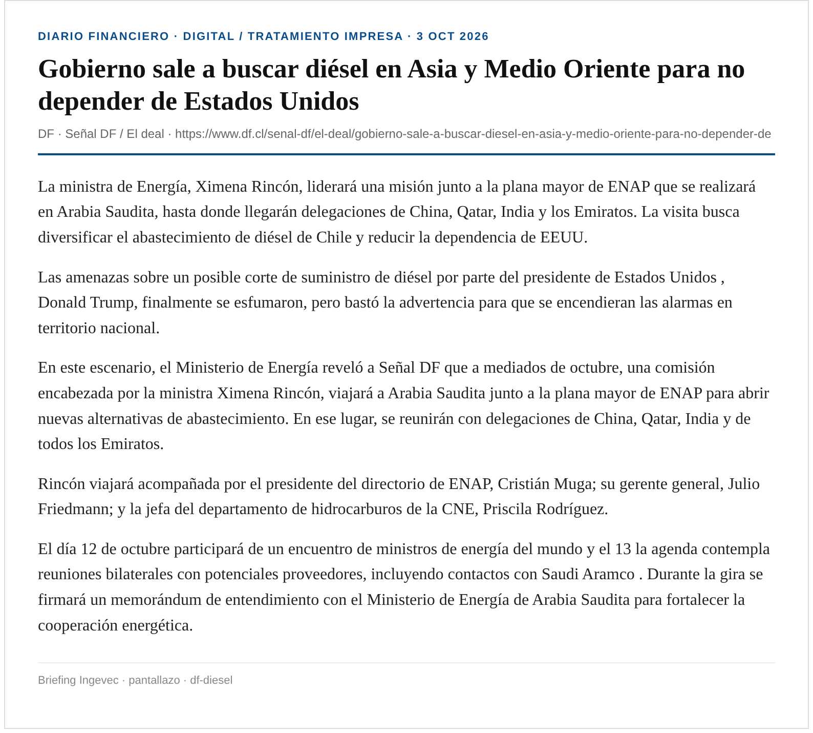
La ministra de Energía, Ximena Rincón, liderará una misión junto a la plana mayor de ENAP que se realizará en Arabia Saudita, hasta donde llegarán delegaciones de China, Qatar, India y los Emiratos. La visita busca diversificar el abastecimiento de diésel de Chile y reducir la dependencia de EEUU.
Las amenazas sobre un posible corte de suministro de diésel por parte del presidente de Estados Unidos , Donald Trump, finalmente se esfumaron, pero bastó la advertencia para que se encendieran las alarmas en territorio nacional.
En este escenario, el Ministerio de Energía reveló a Señal DF que a mediados de octubre, una comisión encabezada por la ministra Ximena Rincón, viajará a Arabia Saudita junto a la plana mayor de ENAP para abrir nuevas alternativas de abastecimiento. En ese lugar, se reunirán con delegaciones de China, Qatar, India y de todos los Emiratos.
Rincón viajará acompañada por el presidente del directorio de ENAP, Cristián Muga; su gerente general, Julio Friedmann; y la jefa del departamento de hidrocarburos de la CNE, Priscila Rodríguez.
El Presidente de EE.UU., Donald Trump, elogió ayer a los países europeos por el acuerdo alcanzado por el G7 para liberar 100 millones de barriles de petróleo y diésel con el fin de aliviar los precios de los combustibles, y descartó prohibir las exportaciones de diésel. “Europa estuvo genial, porque liberarán mucho diésel. Ellos usan diésel de una forma más desproporcionada que nosotros. Hicieron algo bueno”, dijo.
Captura DF · DF · EM
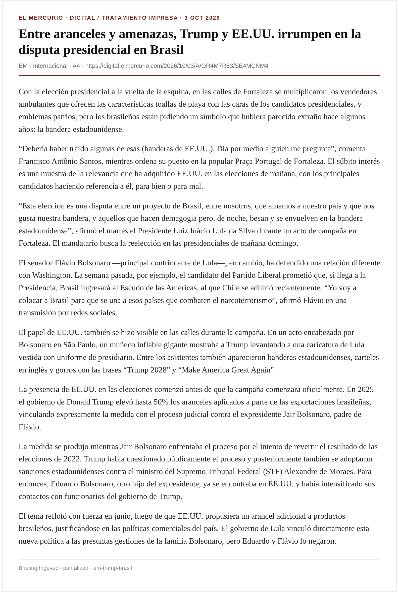
Con la elección presidencial a la vuelta de la esquina, en las calles de Fortaleza se multiplicaron los vendedores ambulantes que ofrecen las características toallas de playa con las caras de los candidatos presidenciales, y emblemas patrios, pero los brasileños están pidiendo un símbolo que hubiera parecido extraño hace algunos años: la bandera estadounidense.
“Debería haber traído algunas de esas (banderas de EE.UU.). Día por medio alguien me pregunta”, comenta Francisco Antônio Santos, mientras ordena su puesto en la popular Praça Portugal de Fortaleza. El súbito interés es una muestra de la relevancia que ha adquirido EE.UU. en las elecciones de mañana, con los principales candidatos haciendo referencia a él, para bien o para mal.
“Esta elección es una disputa entre un proyecto de Brasil, entre nosotros, que amamos a nuestro país y que nos gusta nuestra bandera, y aquellos que hacen demagogia pero, de noche, besan y se envuelven en la bandera estadounidense”, afirmó el martes el Presidente Luiz Inácio Lula da Silva durante un acto de campaña en Fortaleza. El mandatario busca la reelección en las presidenciales de mañana domingo.
El senador Flávio Bolsonaro —principal contrincante de Lula—, en cambio, ha defendido una relación diferente con Washington. La semana pasada, por ejemplo, el candidato del Partido Liberal prometió que, si llega a la Presidencia, Brasil ingresará al Escudo de las Américas, al que Chile se adhirió recientemente. “Yo voy a colocar a Brasil para que se una a esos países que combaten el narcoterrorismo”, afirmó Flávio en una transmisión por redes sociales.
El papel de EE.UU. también se hizo visible en las calles durante la campaña. En un acto encabezado por Bolsonaro en São Paulo, un muñeco inflable gigante mostraba a Trump levantando a una caricatura de Lula vestida con uniforme de presidiario. Entre los asistentes también aparecieron banderas estadounidenses, carteles en inglés y gorros con las frases “Trump 2028” y “Make America Great Again”.
Captura EM · EM
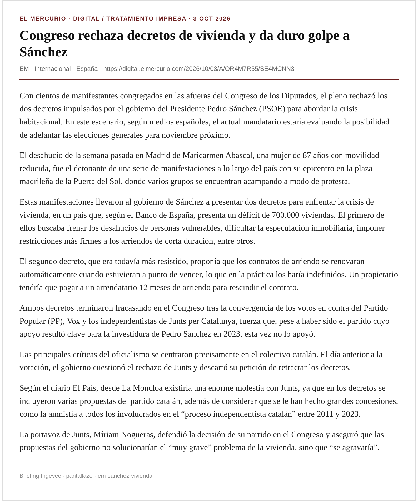
Con cientos de manifestantes congregados en las afueras del Congreso de los Diputados, el pleno rechazó los dos decretos impulsados por el gobierno del Presidente Pedro Sánchez (PSOE) para abordar la crisis habitacional. En este escenario, según medios españoles, el actual mandatario estaría evaluando la posibilidad de adelantar las elecciones generales para noviembre próximo.
El desahucio de la semana pasada en Madrid de Maricarmen Abascal, una mujer de 87 años con movilidad reducida, fue el detonante de una serie de manifestaciones a lo largo del país con su epicentro en la plaza madrileña de la Puerta del Sol, donde varios grupos se encuentran acampando a modo de protesta.
Estas manifestaciones llevaron al gobierno de Sánchez a presentar dos decretos para enfrentar la crisis de vivienda, en un país que, según el Banco de España, presenta un déficit de 700.000 viviendas. El primero de ellos buscaba frenar los desahucios de personas vulnerables, dificultar la especulación inmobiliaria, imponer restricciones más firmes a los arriendos de corta duración, entre otros.
El segundo decreto, que era todavía más resistido, proponía que los contratos de arriendo se renovaran automáticamente cuando estuvieran a punto de vencer, lo que en la práctica los haría indefinidos. Un propietario tendría que pagar a un arrendatario 12 meses de arriendo para rescindir el contrato.
Captura EM · EM
El gobierno de Chile exhortó ayer a las autoridades de Nicaragua a “avanzar hacia el restablecimiento de la institucionalidad”, tras aprobar la resolución surgida por consenso en la Organización de Estados Americanos (OEA) ante las acciones antidemocráticas en ese país.
El pronunciamiento chileno se dio en el marco de su participación en la XXXI Reunión de Consulta de ministros de Relaciones Exteriores de la OEA que trató de forma exclusiva la situación de Nicaragua, donde el régimen de Daniel Ortega y Rosario Murillo ha avanzado en la restricción de libertades civiles y políticas.
“Exhortamos a las autoridades nicaragüenses a acoger la oportunidad de diálogo que ofrece esta resolución y a trabajar con la comunidad internacional para avanzar hacia el restablecimiento de la institucionalidad democrática”, dijo Patricio Torres, subsecretario de RR.EE.
Los rincones de la sede de la fundación Horizonte Ciudadano tienen recuerdos y rastros de la carrera política de Michelle Bachelet. Su retrato presidencial cuando asumió el 2006, fotos de su paso como ministra de Defensa, regalos que le hicieron en diversas partes del mundo, carteles de su campaña de la Nueva Mayoría junto con el característico sillón rojo con un mural de fondo. Es el escenario clásico de sus fotografías cuando sostiene una reunión con alguna figura política.
Es justamente con ese encuadre de fondo que el director ejecutivo de la fundación y exparticipante de los dos gobiernos de la exmandataria, Eolo Díaz-Tendero (60), lleva a cabo esta conversación. Para el filósofo, el desembarco de Bachelet en la contingencia nacional es una noticia positiva para la izquierda, pero no se trata de un hito que siga una línea de acción planificada.
“No hay una estrategia política específica que está pensando el paso número uno para llegar al paso número cinco, sino que hay una convicción interna de compromiso con la democracia, con la ciudadanía, con mejorar la condición de la gente”, asegura.
—La exmandataria dijo que “si pensaban que después de esto me iba a ir para la casa, les tengo una mala noticia, eso no va a pasar”. ¿Cómo puede interpretarse esa frase?
—Ella sí tiene una convicción que es profunda, que no tiene que ver con coyunturas, sino con vocación de preocupación por lo que le pasa a Chile. Cuando ella dice que no va a estar desenganchada de Chile, tiene que ver con eso. Lo ha dicho también en otras ocasiones, y eso tiene que ver con esa convicción de que puede aportar a mejorar la vida a los chilenos, y en ese sentido, creo que lo hace desde muy adentro.
Captura EM · EM
“A partir de esta fecha, 8 de mayo de 2026, nos gustaría informarles que, tras contactar y dialogar, hemos forjado un vínculo de amistad, cooperación y fortalecimiento con la mafia turca ‘Sarallar', una de las mayores mafias de Turquía, con presencia en toda Europa”.
Este es uno de los mensajes internos que pudo recuperar un agente encubierto chileno que se infiltró en la agrupación criminal brasileña Primer Comando de la Capital (PCC), en el marco de la investigación de la Fiscalía Metropolitana Sur y la Brigada contra el Crimen Organizado (Brico) de la PDI, que detuvo a una veintena de sus integrantes en Chile.
El trabajo del agente secreto, que se tuvo que ganar la confianza de los criminales internacionales y hasta “bautizarse” para ingresar al corazón del PCC, estableció la forma en que operaba el grupo y el supuesto apoyo de otras peligrosas asociaciones con las que lograron acuerdos y “alianzas”, descritos en mensajes que parecen sacados de “El Padrino”.
“La mafia Ndrangheta está compuesta por familias con una larga tradición”, dice otra de las comunicaciones internas del PCC. Para luego agregar: “También compartimos el objetivo común de garantizar la paz entre todos los miembros y aliados de cada organización, respetando su autonomía ideológica y operativa dentro de nuestro estado”.
También se pudo dar con los principales implicados en el caso, que mantenían una red de apoyo y trabajo en las cárceles de Chile. Asimismo, levantar información sobre el plan para ingresar drogas por el aeropuerto de Santiago, el puerto de Valparaíso y hasta respecto de las gestiones para iniciar contactos con un viejo “amigo” que, dicen, hicieron en Brasil: el “Comandante Ramiro”, Mauricio Hernández Norambuena.
Captura EM · EM
En los últimos días, el posible retiro de la reforma de seguridad ha concentrado la atención de La Moneda. Esto, porque el lunes los senadores integrantes de la comisión de Constitución, Pedro Araya (PPD), Andrés Longton (RN) y Arturo Squella (P. Republicano), anticiparon que el Ejecutivo retiraría la reforma de seguridad. Aquel anuncio no fue coordinado con La Moneda. De hecho, hasta el jueves, Palacio insistió en que la “bajada” de la propuesta era solo una “opción”.
En el Gobierno ratifican que los senadores no avisaron previamente que anunciarían el retiro por parte del Ejecutivo. Sin embargo, niegan que se trate de una “descoordinación”, puesto que —desde su punto de vista— hacer adelantos de ese tipo es parte de las atribuciones y libertad que tienen los legisladores. Bajo la misma lógica, sostienen que no es “función” del Gobierno estar “controlando” a los senadores.
En este contexto, el jueves, el Presidente José Antonio Kast dijo en Antofagasta que “si hay que retirarla (la reforma), no tengo ningún problema”. De ese modo, terminó con las especulaciones y versiones cruzadas entre el Ejecutivo y los legisladores.
El mandatario abordó nuevamente el tema ayer en un encuentro de la Cámara Nacional de Comercio (CNC). “Necesitamos volver a crecer (...). Estamos aquí también para hacer las críticas constructivas. Sí son necesarias las críticas. Uno no conoce, no sabe todo”, comenzó diciendo Kast.
El 10 de marzo de 2025 fue el último día de Maya Fernández (PS) como ministra de Defensa. Fue aquella jornada cuando el entonces mandatario, Gabriel Boric, aceptó su renuncia al ministerio que había liderado desde el 11 de marzo de 2022.
El motivo que gatilló su salida del gabinete fueron las réplicas públicas que provocó la fallida venta de la antigua residencia del expresidente Salvador Allende en Guardia Vieja al fisco, operación que la Constitución no permite, pues prohíbe los contratos entre el Estado y ministros y congresistas. Fernández, y su tía, entonces senadora, Isabel Allende, eran propietarias del inmueble.
La oposición de entonces buscó acusarla constitucionalmente por este polémico caso, aunque aquella arremetida no prosperó en el Congreso.
El caso se configuró, de todos modos, como una de las crisis más potentes que golpearon a la administración anterior.
Con los alegatos de apertura del fiscal Osvaldo Ossandón, del Consejo de Defensa del Estado y de otros siete abogados querellantes, más el de una de las defensas, partió ayer el juicio oral contra los nueve acusados de integrar una asociación criminal destinada a generar incendios forestales, uno de ellos la megacatástrofe del 2 de febrero de 2024 en Viña del Mar y Quilpué que dejó 138 muertos, 8 mil hectáreas arrasadas y 12 mil personas damnificadas.
En la primera jornada solo se alcanzó, además, a leer las acusaciones del Ministerio Público y las particulares, dejando pendiente para el lunes los alegatos de las otros ocho defensas y recién el martes podría declarar uno de los acusados, el exbrigadista de Conaf José Atenas.
Este arriesga, al igual que los otros imputados, presidio perpetuo calificado por incendio con resultado de muerte en carácter reiterado, siete años por delito ambiental y cinco años por integrar una asociación criminal que causó 21 incendios forestales entre los años 2021 y 2024, según los cargos que enfrenta.
En el juicio participan 49 abogados patrocinantes y querellantes, 14 defensores y en los dos meses que se estima durará, se prevé que declaren 216 testigos y 45 peritos.
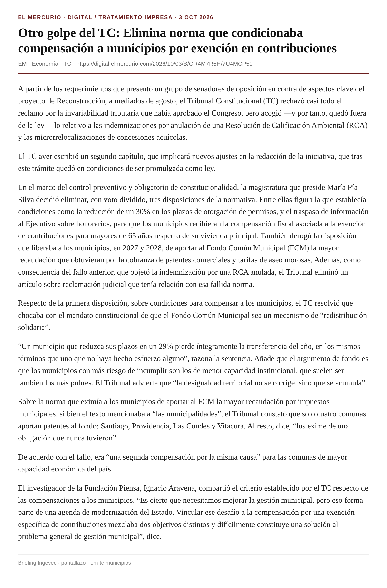
A partir de los requerimientos que presentó un grupo de senadores de oposición en contra de aspectos clave del proyecto de Reconstrucción, a mediados de agosto, el Tribunal Constitucional (TC) rechazó casi todo el reclamo por la invariabilidad tributaria que había aprobado el Congreso, pero acogió —y por tanto, quedó fuera de la ley— lo relativo a las indemnizaciones por anulación de una Resolución de Calificación Ambiental (RCA) y las microrrelocalizaciones de concesiones acuícolas.
El TC ayer escribió un segundo capítulo, que implicará nuevos ajustes en la redacción de la iniciativa, que tras este trámite quedó en condiciones de ser promulgada como ley.
En el marco del control preventivo y obligatorio de constitucionalidad, la magistratura que preside María Pía Silva decidió eliminar, con voto dividido, tres disposiciones de la normativa. Entre ellas figura la que establecía condiciones como la reducción de un 30% en los plazos de otorgación de permisos, y el traspaso de información al Ejecutivo sobre honorarios, para que los municipios recibieran la compensación fiscal asociada a la exención de contribuciones para mayores de 65 años respecto de su vivienda principal. También derogó la disposición que liberaba a los municipios, en 2027 y 2028, de aportar al Fondo Común Municipal (FCM) la mayor recaudación que obtuvieran por la cobranza de patentes comerciales y tarifas de aseo morosas. Además, como consecuencia del fallo anterior, que objetó la indemnización por una RCA anulada, el Tribunal eliminó un artículo sobre reclamación judicial que tenía relación con esa fallida norma.
Respecto de la primera disposición, sobre condiciones para compensar a los municipios, el TC resolvió que chocaba con el mandato constitucional de que el Fondo Común Municipal sea un mecanismo de “redistribución solidaria”.
Ingevec: Impacto en finanzas municipales y permisos/compensaciones urbanas.
Captura EM · EM
Generado 2026-10-03 America/Santiago · Fuentes: digital.elmercurio.com + df.cl + medios digitales · Ingevec: no